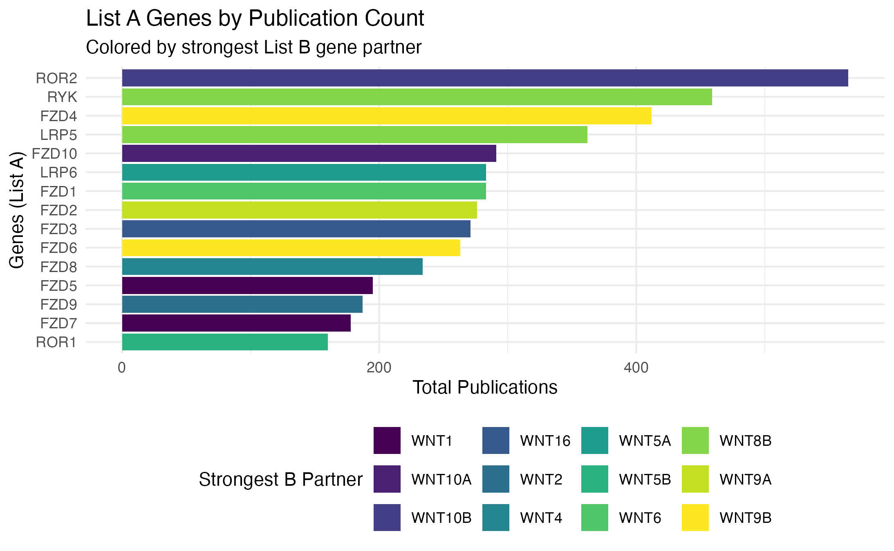
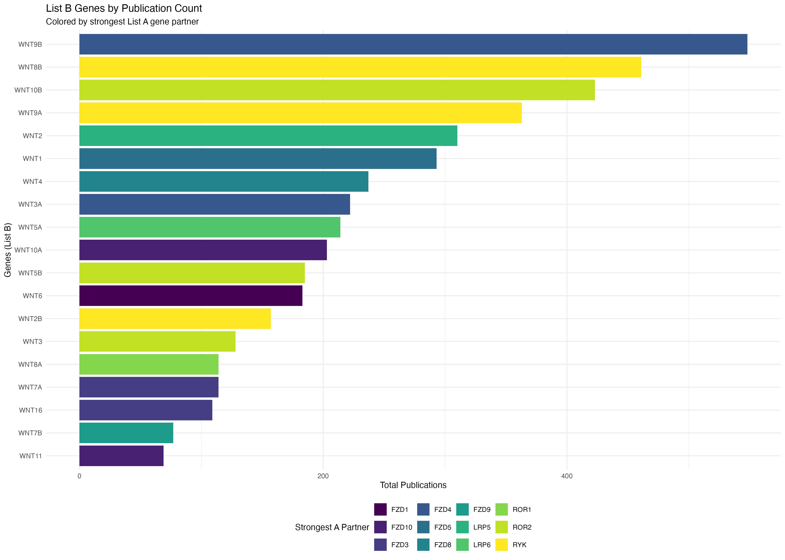
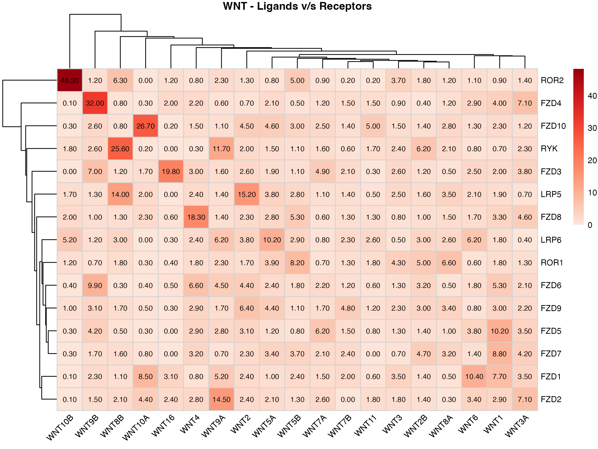
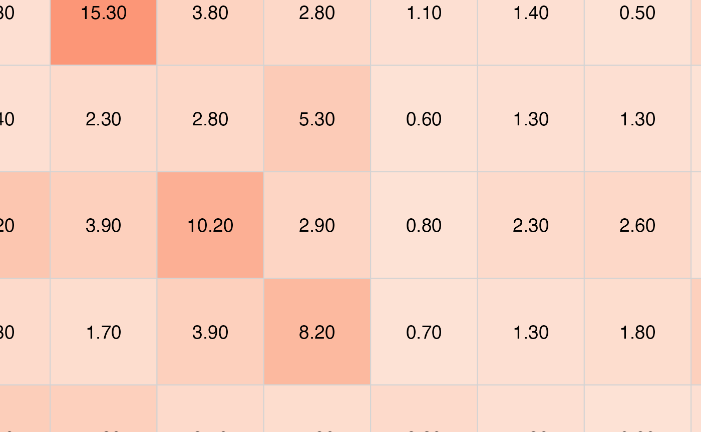

PubMatrixR with Ligand Receptors
A comprehensive guide to analyzing publication relationships
ToledoEM
2025-11-14
WntExample.rmd##
## Attaching package: 'dplyr'## The following object is masked from 'package:kableExtra':
##
## group_rows## The following objects are masked from 'package:stats':
##
## filter, lag## The following objects are masked from 'package:base':
##
## intersect, setdiff, setequal, union
A <- c("WNT1", "WNT2", "WNT2B", "WNT3", "WNT3A", "WNT4", "WNT5A", "WNT5B",
"WNT6", "WNT7A", "WNT7B", "WNT8A", "WNT8B", "WNT9A", "WNT9B",
"WNT10A", "WNT10B", "WNT11", "WNT16")
B <- c("FZD1", "FZD2", "FZD3", "FZD4", "FZD5", "FZD6", "FZD7",
"FZD8", "FZD9", "FZD10", "LRP5", "LRP6", "ROR1", "ROR2", "RYK")
current_year <- format(Sys.Date(), "%Y")
result <- PubMatrix(A = A,
B = B,
Database = "pubmed",
daterange = c(1990, current_year),
outfile = "pubmatrix_result")## [1] "https://eutils.ncbi.nlm.nih.gov/entrez/eutils/esearch.fcgi?db=pubmed&datetype=pdat&mindate=1990&maxdate=2025"
## [1] "<b><a href=\"https://www.ncbi.nlm.nih.gov/pubmed/?term=1990:2025[DP]+AND+"
# Create data frame for List A genes (rows) colored by List B genes (columns)
a_genes_data <- data.frame(
gene = rownames(result),
total_pubs = rowSums(result),
stringsAsFactors = FALSE
)
# Add color coding based on max overlap with B genes
a_genes_data$max_b_gene <- apply(result, 1, function(x) colnames(result)[which.max(x)])
a_genes_data$max_overlap <- apply(result, 1, max)
# Create data frame for List B genes (columns) colored by List A genes (rows)
b_genes_data <- data.frame(
gene = colnames(result),
total_pubs = colSums(result),
stringsAsFactors = FALSE
)
# Add color coding based on max overlap with A genes
b_genes_data$max_a_gene <- apply(result, 2, function(x) rownames(result)[which.max(x)])
b_genes_data$max_overlap <- apply(result, 2, max)
# Plot A genes colored by their strongest B gene partner
p1 <- ggplot(a_genes_data, aes(x = reorder(gene, total_pubs), y = total_pubs, fill = max_b_gene)) +
geom_bar(stat = "identity")+
coord_flip() +
labs(title = "List A Genes by Publication Count",
subtitle = "Colored by strongest List B gene partner",
x = "Genes (List A)",
y = "Total Publications",
fill = "Strongest B Partner") +
theme_minimal() +
theme(legend.position = "bottom") +
scale_fill_viridis_d()
# Plot B genes colored by their strongest A gene partner
p2 <- ggplot(b_genes_data, aes(x = reorder(gene, total_pubs), y = total_pubs, fill = max_a_gene)) +
geom_bar(stat = "identity") +
coord_flip() +
labs(title = "List B Genes by Publication Count",
subtitle = "Colored by strongest List A gene partner",
x = "Genes (List B)",
y = "Total Publications",
fill = "Strongest A Partner")+
theme_minimal() +
theme(legend.position = "bottom") +
scale_fill_viridis_d()
print(p1)
print(p2)
kable(result,
caption = "Co-occurrence Matrix: WNT Genes (Publication Counts)",
align = "c",
format = "html") %>%
kableExtra::kable_styling(bootstrap_options = c("striped", "hover", "condensed"),
full_width = FALSE,
position = "center") %>%
kableExtra::add_header_above(c(" " = 1, "Wnt Genes" = length(A)))| WNT1 | WNT2 | WNT2B | WNT3 | WNT3A | WNT4 | WNT5A | WNT5B | WNT6 | WNT7A | WNT7B | WNT8A | WNT8B | WNT9A | WNT9B | WNT10A | WNT10B | WNT11 | WNT16 | |
|---|---|---|---|---|---|---|---|---|---|---|---|---|---|---|---|---|---|---|---|
| FZD1 | 41 | 14 | 6 | 14 | 17 | 4 | 5 | 11 | 44 | 6 | 7 | 2 | 8 | 32 | 19 | 38 | 1 | 2 | 12 |
| FZD2 | 16 | 14 | 6 | 7 | 33 | 14 | 10 | 6 | 15 | 10 | 0 | 1 | 15 | 81 | 12 | 20 | 1 | 6 | 9 |
| FZD3 | 11 | 15 | 5 | 10 | 18 | 15 | 9 | 5 | 11 | 18 | 7 | 2 | 9 | 10 | 54 | 8 | 0 | 1 | 62 |
| FZD4 | 27 | 5 | 2 | 5 | 42 | 14 | 13 | 3 | 17 | 6 | 7 | 6 | 7 | 5 | 231 | 2 | 1 | 7 | 10 |
| FZD5 | 45 | 15 | 5 | 4 | 14 | 12 | 5 | 3 | 14 | 18 | 4 | 3 | 3 | 15 | 30 | 1 | 2 | 2 | 0 |
| FZD6 | 28 | 23 | 13 | 5 | 10 | 31 | 11 | 8 | 8 | 8 | 4 | 2 | 2 | 27 | 73 | 2 | 3 | 2 | 2 |
| FZD7 | 38 | 11 | 15 | 2 | 16 | 13 | 13 | 13 | 5 | 6 | 6 | 9 | 10 | 4 | 12 | 3 | 2 | 0 | 0 |
| FZD8 | 17 | 12 | 4 | 3 | 20 | 73 | 12 | 21 | 7 | 2 | 4 | 5 | 9 | 8 | 8 | 10 | 13 | 4 | 2 |
| FZD9 | 14 | 30 | 10 | 7 | 9 | 12 | 17 | 4 | 3 | 5 | 12 | 10 | 11 | 9 | 22 | 2 | 6 | 3 | 1 |
| FZD10 | 13 | 26 | 6 | 6 | 6 | 8 | 22 | 14 | 6 | 10 | 5 | 11 | 6 | 7 | 21 | 104 | 2 | 17 | 1 |
| LRP5 | 12 | 89 | 8 | 12 | 4 | 14 | 21 | 15 | 11 | 5 | 6 | 16 | 100 | 9 | 12 | 11 | 13 | 2 | 0 |
| LRP6 | 10 | 22 | 13 | 2 | 2 | 12 | 46 | 13 | 27 | 3 | 8 | 10 | 22 | 38 | 10 | 0 | 35 | 9 | 1 |
| ROR1 | 8 | 8 | 15 | 12 | 5 | 7 | 14 | 26 | 2 | 2 | 3 | 17 | 11 | 12 | 5 | 1 | 7 | 4 | 1 |
| ROR2 | 8 | 11 | 13 | 25 | 11 | 6 | 6 | 36 | 8 | 6 | 1 | 8 | 61 | 21 | 13 | 0 | 321 | 1 | 8 |
| RYK | 5 | 15 | 36 | 14 | 15 | 2 | 10 | 7 | 5 | 9 | 3 | 12 | 187 | 85 | 26 | 1 | 16 | 9 | 0 |
plot_pubmatrix_heatmap(matrix = result,
title = "WNT - Ligands v/s Receptors",
show_numbers = TRUE)
pubmatrix_heatmap(matrix = result)
## System Information## R version 4.5.1 (2025-06-13)
## Platform: aarch64-apple-darwin20
## Running under: macOS Tahoe 26.1
##
## Matrix products: default
## BLAS: /Library/Frameworks/R.framework/Versions/4.5-arm64/Resources/lib/libRblas.0.dylib
## LAPACK: /Library/Frameworks/R.framework/Versions/4.5-arm64/Resources/lib/libRlapack.dylib; LAPACK version 3.12.1
##
## locale:
## [1] C.UTF-8/C.UTF-8/C.UTF-8/C/C.UTF-8/C.UTF-8
##
## time zone: Europe/London
## tzcode source: internal
##
## attached base packages:
## [1] stats graphics grDevices utils datasets methods base
##
## other attached packages:
## [1] ggplot2_4.0.0 pheatmap_1.0.13 dplyr_1.1.4 kableExtra_1.4.0
## [5] knitr_1.50 PubMatrixR_2.0
##
## loaded via a namespace (and not attached):
## [1] sass_0.4.10 generics_0.1.4 xml2_1.4.1 stringi_1.8.7
## [5] digest_0.6.37 magrittr_2.0.4 evaluate_1.0.5 grid_4.5.1
## [9] RColorBrewer_1.1-3 fastmap_1.2.0 jsonlite_2.0.0 viridisLite_0.4.2
## [13] scales_1.4.0 pbapply_1.7-4 textshaping_1.0.4 jquerylib_0.1.4
## [17] cli_3.6.5 rlang_1.1.6 withr_3.0.2 cachem_1.1.0
## [21] yaml_2.3.10 tools_4.5.1 parallel_4.5.1 curl_7.0.0
## [25] vctrs_0.6.5 R6_2.6.1 lifecycle_1.0.4 stringr_1.6.0
## [29] fs_1.6.6 htmlwidgets_1.6.4 ragg_1.5.0 pkgconfig_2.0.3
## [33] desc_1.4.3 pkgdown_2.2.0 pillar_1.11.1 bslib_0.9.0
## [37] gtable_0.3.6 glue_1.8.0 systemfonts_1.3.1 xfun_0.54
## [41] tibble_3.3.0 tidyselect_1.2.1 rstudioapi_0.17.1 farver_2.1.2
## [45] htmltools_0.5.8.1 rmarkdown_2.30 svglite_2.2.2 labeling_0.4.3
## [49] compiler_4.5.1 S7_0.2.0
# Additional system details
cat("Date generated:", format(Sys.time(), "%Y-%m-%d %H:%M:%S %Z"), "\n")## Date generated: 2025-11-14 15:02:35 GMT
cat("R version:", R.version.string, "\n")## R version: R version 4.5.1 (2025-06-13)
cat("Platform:", R.version$platform, "\n")## Platform: aarch64-apple-darwin20## Operating System: Darwin 25.1.0